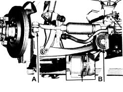

4450A10 FRONT WHEEL GEOMETRY - CHECK USING OPTICAL EQUIPMENT - INCLUDES ADJUSTMENT IF NECESSARY
- Path
- Procedures > 44 SUSPENSION AND WHEELS > 4450 HUBS AND WHEELS > 4450A WHEEL GEOMETRY > 4450A10 FRONT WHEEL GEOMETRY - CHECK USING OPTICAL EQUIPMENT - INCLUDES ADJUSTMENT IF NECESSARY
- Kind
- repair procedure (removal / refitting; the operation number is the code)
- Applies to
- all engines; all production periods
- Interactive page
- https://sloeber94.github.io/elrnDB/alfa/159/en/#/939010868
Applies to: all engines; all production periods
- Check the front wheel geometry after conducting the following checks on the parts that affect wheel geometry.
- vehicle under "STANDARD 0" load conditions (all engine fluids and approx 8 litres of fuel in the tank) or "STANDARD A" load conditions (vehicle unladen with spare wheel, tools, accessories and all fluids/oils topped up witha full tank of fuel).
- Tyre inflation pressure.
Applies to: engines: 1.8, 1.9 JTS, 2.2 JTS, 3.2 JTS, 1.9 JTD 8V, 1.9 JTD 16V; all production periods
GEOMETRY CHECK
1. Check the front wheel geometry by ensuring that ground clearances A - B are within specified values.
Standard wheel geometry (standard 0) | ||
|---|---|---|
Distance A - B | 113 ± 5 | mm |
Front wheel geometry (standard A) | ||
|---|---|---|
Distance A - B | 115 ± 5 | mm |

Applies to: engines: 2.4 JTD 20V; all production periods
GEOMETRY CHECK
1. Check the front wheel geometry by ensuring that ground clearances A - B are within specified values.
Standard wheel geometry (standard 0) | ||
|---|---|---|
Distance A - B | 111 ± 5 | mm |
Front wheel geometry (standard A) | ||
|---|---|---|
Distance A - B | 113 ± 5 | mm |

Applies to: all engines; all production periods
TOE IN CHECK
- Check that the front wheel half toe-in is within required limits.
FRONT WHEEL SEMI TOE IN | ||
|---|---|---|
Standard 0 | - 8’ ± 4’ | - |
FRONT WHEEL SEMI TOE IN | ||
|---|---|---|
Standard A | - 8’ ± 4’ | - |
- If the front wheel half toe in value is not within the recommended figures, adjust it following the instructions given below.
ADJUSTING TOE-IN
- Make sure that the steering wheel is perfectly straight and lock it in this position using a suitable tool.
1. Loosen the lock-nuts fastening the steering rods.
2. Tighten or loosen the steering links until the toe in is correct keeping the front wheels aligned.
- Tighten the steering link lock-nuts to the recommended torque.
Component | Fastening | dia | Value (daNm) | Validity |
|---|---|---|---|---|
Steering rod | Locknut | M20 | (power assisted steering box side) 11.7 - 14.3 |
- Remove the tool used to lock the steering wheel.

Applies to: all engines; all production periods
CAMBER CHECK
- Check that the front wheel camber is within required limits.
FRONT WHEEL CAMBER | ||
|---|---|---|
Standard 0 | -33’ ± 18’ | - |
FRONT WHEEL CAMBER | ||
|---|---|---|
Standard A | -35’ ± 18’ | - |
CASTER CHECK
- Check that the front wheel caster is within required limits.
FRONT WHEEL CASTER | ||
|---|---|---|
Standard 0 | 4° 03’ ± 18’ | - |
FRONT WHEEL CASTER | ||
|---|---|---|
Standard A | 4° 15’ ± 18’ | - |